Æfingadagbókin sem fylgir þér í ræktina.
Skráðu hvert sett á nokkrum sekúndum, sjáðu strax hvað þú tókst síðast og fylgstu með framförunum viku eftir viku. Hún er smíðuð á Íslandi, fyrir fólk sem vill bæta sig.
Virkar í öllum símum, spjaldtölvum og tölvum. Settu hana á heimaskjáinn eins og app, án þess að fara í app-búð.
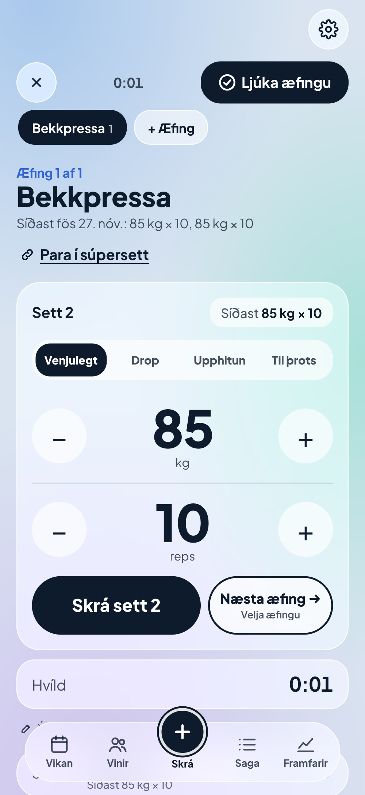
Símann í vasann. Hugann við stöngina.
Þú skráir settið á nokkrum sekúndum og hvíldarklukkan fer sjálf af stað.
Allt snýst um settið sem þú ert í núna.
Á milli setta viltu ekki leita að tökkum. Þú sérð eitt sett í einu, stórar tölur og það sem þú gerðir síðast.
Eitt sett í einu, með tölunum frá síðast.
Þyngd og endurtekningar bíða tilbúnar. Þú ýtir á „Skrá“, hvíldarklukkan fer af stað og næsta sett byrjar á sömu tölum.
- Síðast, alltaf fyrir framan þigHvert sett sýnir hvað þú tókst síðast og hvort þú ert yfir eða undir.
- Upphitun, drop og til þrotsUpphitunarsett teljast ekki með í metum og magni. Dropsett og súpersett eru einn smellur.
- Planki með niðurtalninguVeldu tíma eða láttu appið telja niður, með hljóði og titringi. Skjárinn sofnar ekki á meðan.
- Upphífingar með léttinguEigin þyngd, aukaþyngd eða létting: 80 kg − 20 kg teljast 60 kg, svo metin verða rétt.
- Upphitun á þrektækiSkráðu hjólið eða skíðavélina fyrir og eftir, inni í sömu æfingu.
- Teygjur, gufa og pottarLokaðu æfingunni með teygjum eða kalda pottinum og sjáðu hve oft þú teygir.
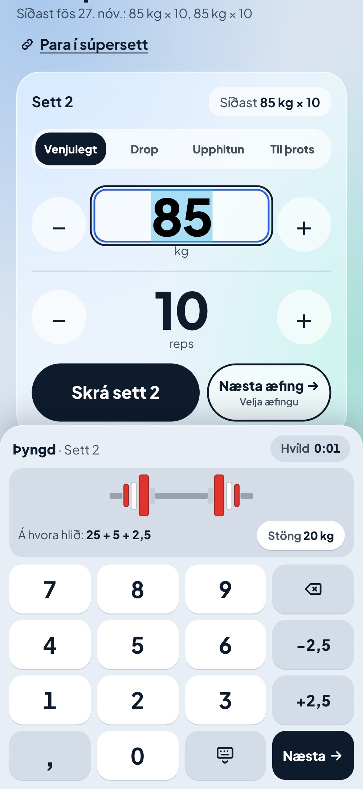
Talnaborð sem reiknar plöturnar.
Stórir takkar sem auðvelt er að hitta á, líka með sveittar hendur. Um leið sérðu hvaða plötur fara á hvora hlið, svo þú þarft ekki að reikna í huganum.
- Plötureikningur25 + 5 + 2,5 á hvora hlið, í litunum sem þú þekkir úr ræktinni.
- Þín rækt, þínar plöturStilltu stöngina (20, 15 eða 10 kg) og hvaða plötur eru til.
- ±2,5 og „Sama“Hækkaðu um eitt þrep, eða endurtaktu síðasta sett.
- Á síma, spjaldtölvu og FoldSpjald neðst í síma, fast til hliðar á breiðum skjá og í Flex-ham á Galaxy Fold.
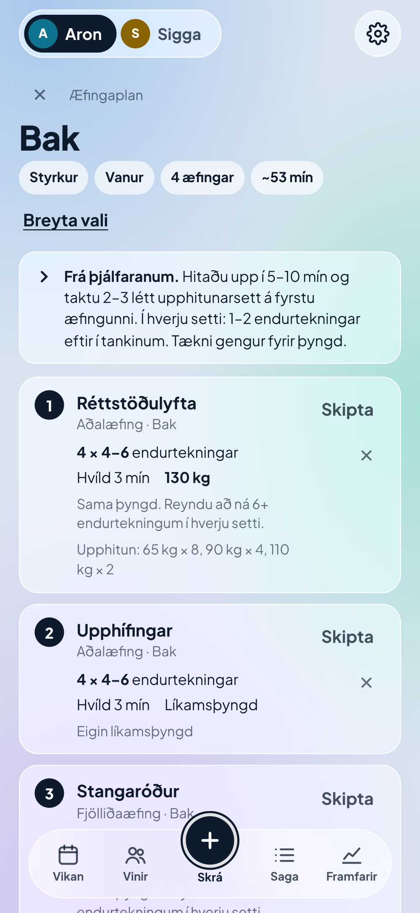
Æfingaplan sem byggir á því sem þú lyftir síðast.
Veldu vöðvahópa og markmið. Appið raðar æfingunni saman með settum, endurtekningum og hvíld, og hækkar þyngdina þegar þú ræður við meira.
- Styrkur, pump eða þolÞrjú markmið með réttu bili af endurtekningum og hvíld fyrir hverja æfingu.
- Tvöföld framvindaÞegar þú nærð efri mörkum í öllum settum hækkar þyngdin næst.
- Byrjandi eða vanurRáð um hve mörgum endurtekningum þú átt að eiga eftir í hverju setti.
- Skiptu um æfinguTækið upptekið? Skiptu út fyrir sambærilega æfingu á sama vöðvahóp.
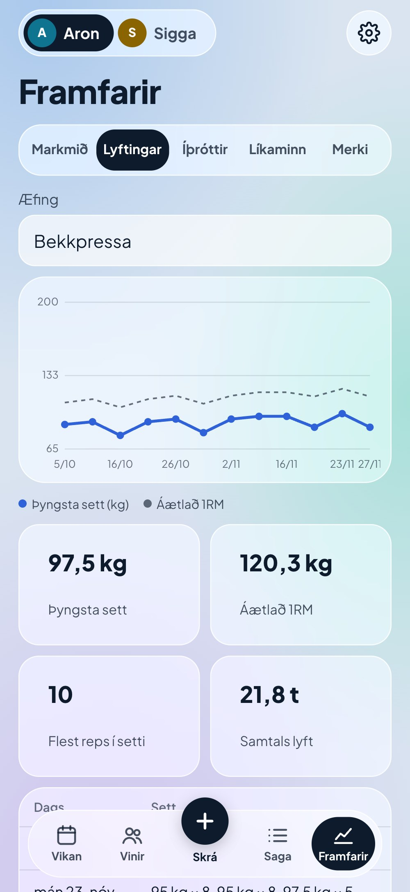
Sjáðu hvort þú ert að bæta þig.
Línurit fyrir hverja æfingu, áætlað hámark (1RM) og heildarþyngd vikunnar.
- Nýtt met straxAppið sér metið um leið og settið er skráð.
- Áætlað 1RMReiknað út frá bestu settunum, án þess að þú þurfir að reyna við hámarkið.
- Vöðvar vikunnarSett á viku á hvern vöðvahóp, borin saman við ráðlögð 10–20 sett.
- Markmið með hring„Bekkpressa 100 kg“ eða „5 æfingar á viku“, og hringurinn fyllist.
Leitaðu á íslensku eða ensku
„Lat pulldown“ finnur niðurtog og „RDL“ finnur rúmenska réttstöðu. Um 200 æfingar, raðaðar eftir vöðvahópum.
Tækin í þinni rækt
Vélar frá Technogym og fleirum eru í safninu og þú getur bætt við þínum eigin. Appið giskar sjálft á hvort þær eru í tíma eða með eigin þyngd.
Sama og síðast
Endurtaktu síðustu lyftingaæfingu, sundferð eða hlaup í einu skrefi. Ef dagurinn er eins og síðast þarftu ekkert að slá inn.
Framfarirnar, svart á hvítu.
Þú sérð hvaða vöðvar fengu nóg í vikunni, hvar þú slóst met og hve langt er í markmiðið.
Og allt hitt sem þú gerir.
Ræktin er í forgrunni, en flestir gera meira en að lyfta. Þess vegna eru 17 íþróttir í appinu, hver með sína reiti.
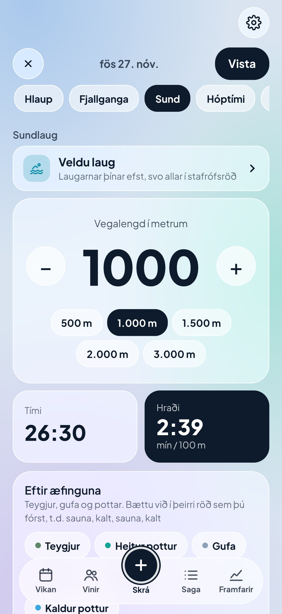
Allar 128 sundlaugar landsins
Veldu laugina, metrana og tímann. Skráðu heita pottinn, kalda pottinn og gufuna, og safnaðu laugum í laugaleiknum.
Hraði, púls og álag
Vegalengd og tími gefa hraða á km. Hlaupamarkmið eins og „10 km undir 55:00“.
Hringir og æfingasvæðið
Högg, punktar og völlur. Lengsti boltinn á æfingasvæðinu verður að meti.
WOD og PB
Fran, Grace, Murph og hinar. Tími, umferðir og persónuleg met.
Hækkun í Hvannadalshnúkum
Skráðu Esjuna að Steini með hækkun. Í árslok sérðu hve marga Hvannadalshnúka þú gekkst samtals.
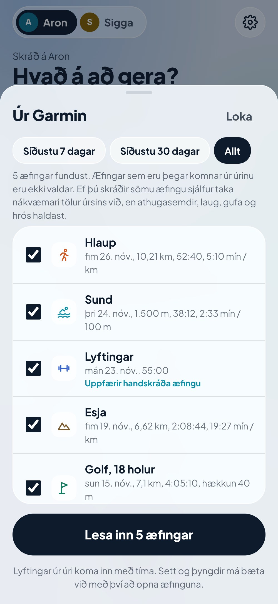
Sæktu æfingarnar úr úrinu
Lestu inn hlaup, sund og hjól úr skrá frá úrinu. Það sem er þegar skráð tvöfaldast ekki.
Líka: hjól, skíði, hóptímar og spinning, jóga og pilates, boltaíþróttir, padel og tennis, róður, klifur, bardagaíþróttir og dans.
Með öðrum, eða bara fyrir þig.
Æfðu með makanum, kepptu við vinina eða haltu öllu fyrir þig.
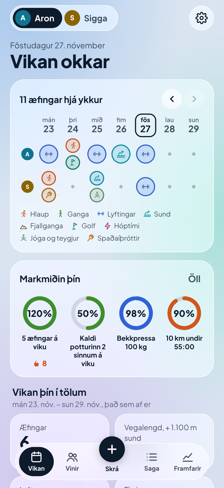
Með makanum
Sameiginleg vika og saga. Annað ykkar getur skráð æfingu fyrir hitt þegar þið æfið saman.
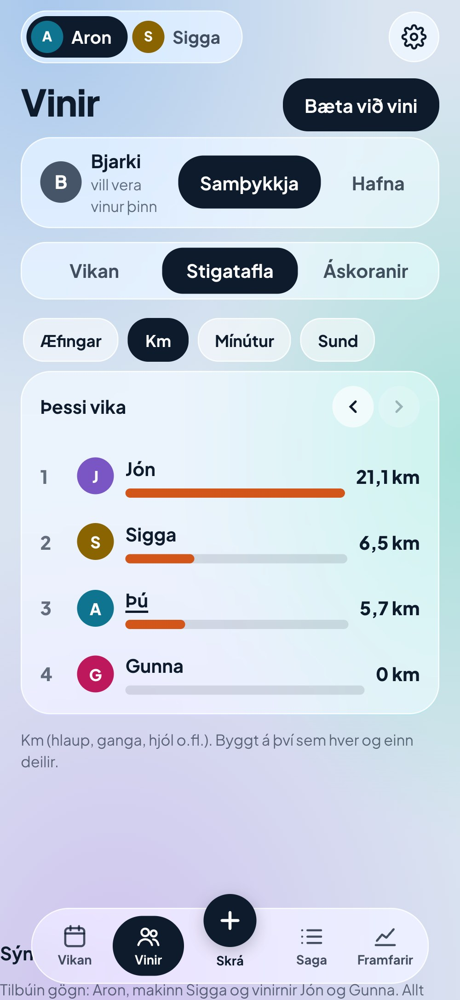
Með vinunum
Stigatafla vikunnar, áskoranir, hrós og athugasemdir. Það er auðveldara að mæta þegar vinirnir sjá stigatöfluna.
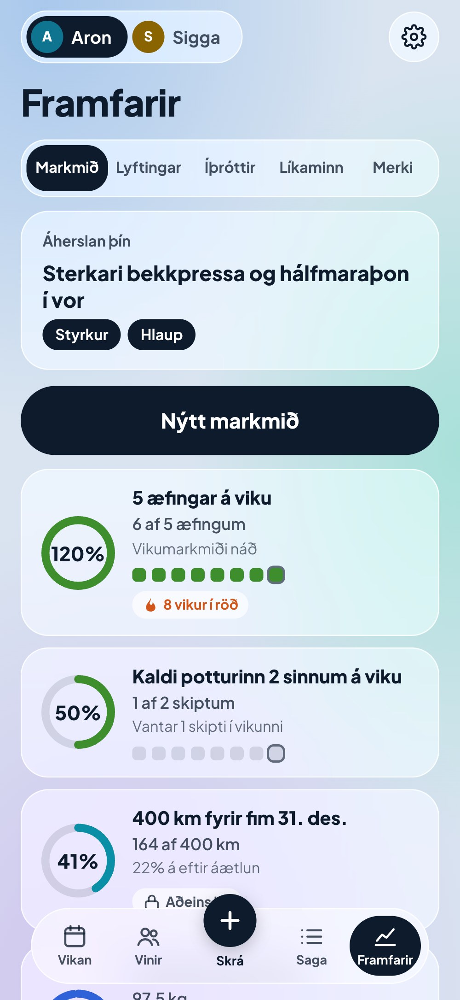
Bara þú
Markmið, merki og vikur í röð. Vinirnir geta hrósað þegar markmiðinu er náð.
Þú stjórnar því hvað vinir sjá
Aðeins þú og makinn sjáið æfingarnar í heild.
Vikan þín í einni mynd.
Á sunnudögum og mánudögum bíður samantekt vikunnar. Veldu útlit og deildu í Instagram Story eða með hópnum. Í árslok kemur „Árið þitt“.
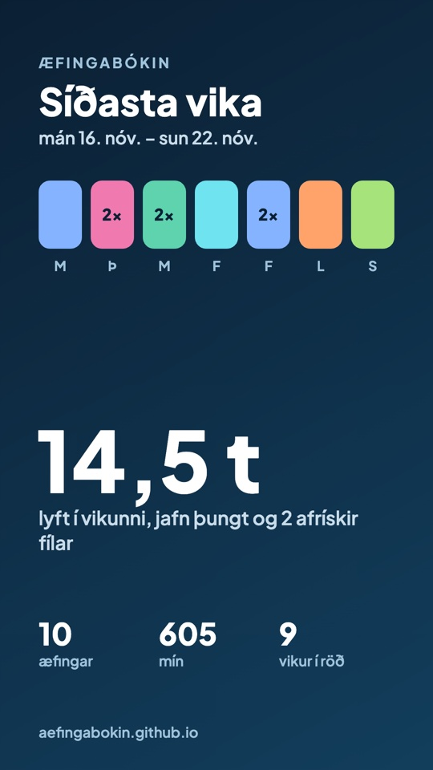
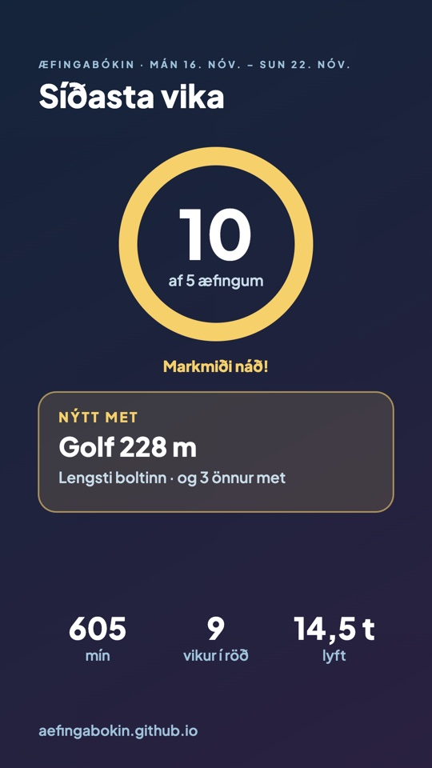
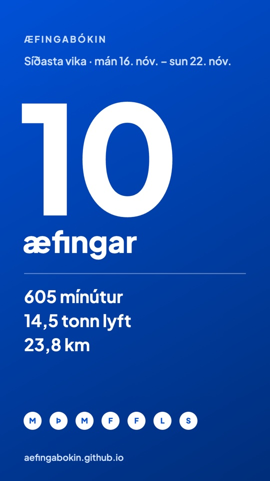
Og litlu atriðin.
Kjallarinn í ræktinni er ekkert mál. Allt samstillist þegar samband kemst á.
Fylgir stillingu símans. Hver íþrótt hefur sinn lit.
Lagar sig að opnum Galaxy Fold, spjaldtölvu og breiðum skjá, með flýtilyklum.
Flyttu allt út í Excel eða taktu afrit hvenær sem er.
Allt viðmót á íslensku, með íslensku talnasniði. Enska er í boði.
Engar auglýsingar og engin sala á gögnum. Gögnin eru geymd á netþjónum í Evrópu.
Vikur í röð, mánuðir, heilt ár, og laugaleikurinn.
Nýjungar koma inn án þess að þú gerir neitt.
Frá höfundinum
Ég fann aldrei app sem hentaði mér til að skrá æfingarnar. Þau sem ég prófaði voru annaðhvort þung í notkun eða gamaldags í útliti, svo ég smíðaði mitt eigið.
Margir í kringum mig æfa líka og mér fannst spennandi að geta séð hvað hinir eru að gera. Þar fær maður hugmyndir, og stundum hvatninguna sem þarf til að mæta oftar og ýta sér aðeins lengra.
Næsta æfing byrjar á fyrsta settinu. Skráðu það.
Opna ÆfingabókinaSpurt og svarað
Kostar Æfingabókin eitthvað?
Nei. Hún er ókeypis og án auglýsinga.
Þarf ég að sækja app?
Nei. Opnaðu aefingabokin.github.io í símanum og settu hana á heimaskjáinn. Á Android: valmynd vafrans og „Setja upp app“. Á iPhone: Deila í Safari og „Bæta á heimaskjá“. Hún opnast þá í fullum skjá eins og hvert annað app.
Virkar hún án nets?
Já. Þú getur skráð heila æfingu í kjallaranum og allt samstillist þegar síminn kemst í samband.
Hver sér æfingarnar mínar?
Aðeins þú og makinn, ef þú bætir maka við. Vinir sjá aðeins það sem þú leyfir: ekkert, yfirlit eða allt. Sjálfgefið er að spyrja í hvert skipti.
Get ég sótt æfingar úr úrinu?
Já, úr Garmin, Strava og Apple Health, af Galaxy Watch í gegnum Strava, og úr GPX- eða TCX-skrám. Æfingar sem eru þegar skráðar tvöfaldast ekki.
Get ég tekið gögnin með mér?
Já. Þú getur flutt öll sett og æfingar út í Excel og tekið afrit hvenær sem er.